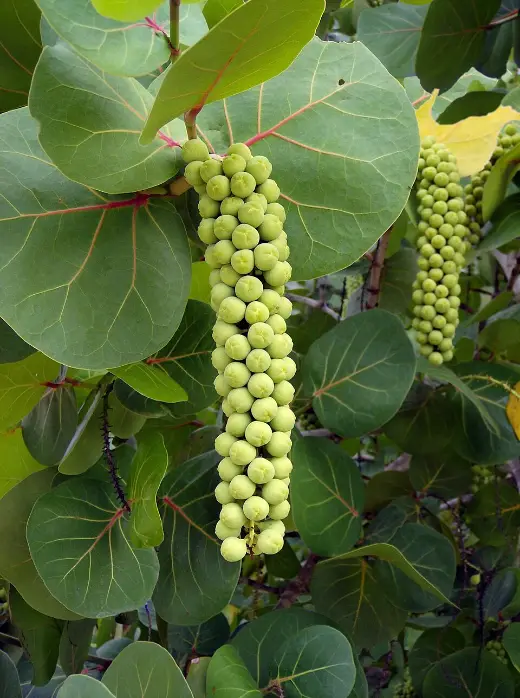

Sauces, preserves & sides · Popular in Southeast
Sea grape jelly
Sea grape jelly is made with wild sea grape, a favourite in Southeast.

How do you make sea grape jelly?
Florida sea grapes cooked and strained into jelly.
Wild ingredients
- Sea grape (Coccoloba uvifera): in season August to October
Watch the recipe

Video: Stdagger on YouTube